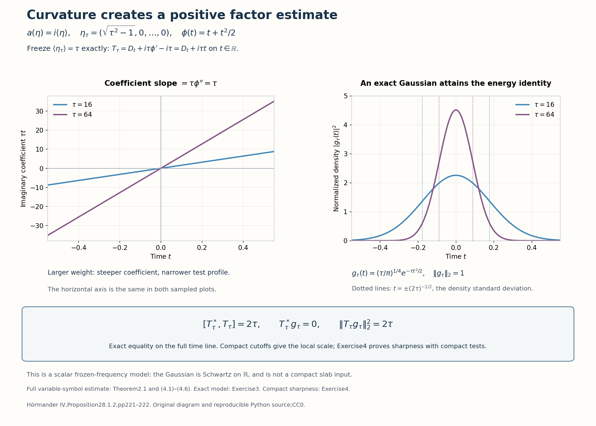

Exponential weights for first-order Cauchy factors
A root of the principal polynomial becomes a first-order evolution factor. A real root and a nonreal elliptic root require different estimates. For an elliptic root, the curvature of a time weight creates a positive commutator; slow variation makes the remaining commutator small enough to absorb. If the imaginary part of the root is bounded above, the imaginary quadratic form instead gives a stronger estimate directly. These mechanisms also explain the derivative cost of a pair of elliptic factors.
We use the ordinary finite symbol product, adjoint and uniform Hilbert bound, (B8b), (B8a) and (B26), in When a moving symbol scale controls an operator. The order-one sharp lower bound is (P44)–(P45), in Positivity through a moving family of scalar probes, specialized to scalar coefficients, order one, and ordinary derivative costs. We prove the factor estimates and their complete absorption here. The earlier Transport, exponential weights, and local uniqueness provides a real differential example and the purpose of separating the cutoff error from the largest weight levels. Historical attribution for the present factor statements is Hörmander [H, Propositions 28.1.2–28.1.3 and (28.1.11)].
1. A weight and its conjugated factor
Write the variables as \((t,x)\in\mathbb R\times\mathbb R^d\), with transverse frequency \(\eta\). The convention is \(D=-i\partial\), and the inner product is linear in its first entry. Ordinary symbols of order \(r\) obey
\[ |\partial_{t,x}^{\beta}\partial_\eta^{\gamma}a(t,x,\eta)| \leq C_{\beta\gamma}\langle\eta\rangle^{r-|\gamma|}. \tag{1.1} \]All bounds are global in the displayed base variables. Quantization below is left quantization in \(x\), with \(t\) a parameter. Symbols may be complex and need not be homogeneous. Put
\[ \begin{gathered} I=(-1/2,1/2),\qquad \phi(t)=t+t^2/2,\qquad0<\epsilon\leq1,\\ A_\epsilon(t)=\operatorname{Op}_x(a(\epsilon t,\epsilon x,\eta)), \qquad L_\epsilon=D_t-A_\epsilon. \end{gathered} \tag{1.2} \]For \(u\in C_c^\infty(I\times\mathbb R^d)\), set \(v=e^{\tau\phi}u\), where \(\tau\geq1\). Since the weight depends only on \(t\), it commutes exactly with \(A_\epsilon\). The ordinary product rule gives
\[ T_{\epsilon,\tau} =e^{\tau\phi}L_\epsilon e^{-\tau\phi} =D_t+i\tau\phi'(t)-A_\epsilon, \qquad \phi'=1+t\geq1/2,\quad \phi''=1. \tag{1.3} \]The sign of the imaginary weight term follows from \(D=-i\partial\). The same calculations hold for functions compactly supported in \(t\) and Schwartz in \(x\). This slightly larger test class will permit an ordered factor product without imposing a false compact-support assertion on a transverse pseudodifferential output.
2. The two estimates, with different hypotheses
Theorem 2.1 (elliptic complex factor). Suppose \(a\in S^1\) and, for every \((x,\eta)\),
\[ |\eta|\leq C_0\bigl(|\operatorname{Im}a(0,x,\eta)|+1\bigr). \tag{2.1} \]There are \(\epsilon_0>0\), \(\tau_0\geq1\) and \(C\), depending on \(C_0\) and finitely many symbol bounds, such that, for \(0<\epsilon\leq\epsilon_0\), \(\tau\geq\tau_0\),
\[ \tau\|e^{\tau\phi}u\|_2^2 +\tau^{-1}\left( \|e^{\tau\phi}D_tu\|_2^2 +\sum_{j=1}^d\|e^{\tau\phi}D_{x_j}u\|_2^2\right) \leq C\|e^{\tau\phi}L_\epsilon u\|_2^2. \tag{2.2} \]No sign of the imaginary root is required. Ellipticity in (2.1) is imposed only at the frozen time zero. The scale \(\epsilon\) transfers it to the slab through the proof, rather than through an additional hypothesis.
Theorem 2.2 (imaginary part bounded above). Suppose \(a\in S^1\) and \(\operatorname{Im}a\leq M\) globally. There is \(\tau_1\), depending on \(M\) and finitely many symbol bounds, such that for every \(0<\epsilon\leq1\), \(\tau\geq\tau_1\),
\[ \tau^2\|e^{\tau\phi}u\|_2^2 \leq16\|e^{\tau\phi}L_\epsilon u\|_2^2. \tag{2.3} \]This theorem does not assume (2.1). A real order-one root is included with \(M=0\), although a real left-quantized symbol need not define an exactly self-adjoint operator.
3. Uniform calculus at the slow spatial scale
For the proof of Theorem 2.1 abbreviate \(A=A_\epsilon\), \(T=T_{\epsilon,\tau}\), and put
\[ X=\|v\|_2,\qquad Y=\|\langle D_x\rangle v\|_2,\qquad E=\|Tv\|_2. \tag{3.1} \]All norms integrate in \(t\) as well as \(x\). The following elementary consequences of the stated coefficient calculus keep the constants uniform.
Lemma 3.1. On \(I\),
\[ \begin{gathered} B=[A^*,A]+[D_t,A^*-A],\qquad |(Bv,v)|\leq C\epsilon XY,\\ A^*-A=-2i\operatorname{Op}_x(b_{0,\epsilon}) +\epsilon\operatorname{Op}_x(r_\epsilon),\qquad b_{0,\epsilon}(x,\eta)=\operatorname{Im}a(0,\epsilon x,\eta), \end{gathered} \tag{3.2} \]where \(r_\epsilon\) is uniformly bounded in \(S^1\). Furthermore,
\[ Y\leq C\bigl(\|(A^*-A)v\|_2+X\bigr)+C\epsilon Y, \qquad \|Av\|_2\leq CY. \tag{3.3} \]Proof. Every transverse base derivative of \(a(\epsilon t,\epsilon x,\eta)\) carries a factor \(\epsilon\). For the finite remainder bounds use \(g_\epsilon=\epsilon^2|dx|^2+|d\eta|^2/\langle\eta\rangle^2\). This is a uniformly admissible metric: its frequency weight has uniform slow variation and polynomial temperateness, its base coefficient is constant, and its Planck parameter is \(\epsilon/\langle\eta\rangle\leq1\). The full remainder in (B8b) therefore retains each factor of \(\epsilon\), including the two-derivative remainder. The finite adjoint formula gives \(A^*=\operatorname{Op}(\bar a_\epsilon+s_\epsilon)\), with \(s_\epsilon\) bounded in \(\epsilon S^0\). In the difference of the two products \(A^*A-AA^*\), the scalar zero-derivative products cancel. The first product corrections have one base derivative and are in \(\epsilon S^1\). The complete two-derivative remainders are in \(\epsilon^2S^0\), hence in \(\epsilon S^1\) for \(\epsilon\leq1\). Products containing \(s_\epsilon\) have at most the same \(\epsilon S^1\) bound, with every finite remainder retained. Thus this commutator is in \(\epsilon\Psi^1\). In \([D_t,A^*-A]\), differentiation of the symbols in \(t\) supplies another \(\epsilon\) factor; it too has an \(\epsilon S^1\) symbol. Ordinary order-one mapping and Cauchy–Schwarz prove the first line of (3.2).
The leading adjoint difference is \(-2i\operatorname{Im}a(\epsilon t,\epsilon x,\eta)\). Its difference from \(-2ib_{0,\epsilon}\) is
\[ -2i\epsilon t\int_0^1 a_{\mathrm{im},t}(s\epsilon t,\epsilon x,\eta)\,ds, \tag{3.4} \]where \(a_{\mathrm{im},t}=\partial_t\operatorname{Im}a\). On \(|t|<1/2\) the integral and all of its parameter and transverse derivatives have uniform order-one bounds. Add the \(\epsilon S^0\) adjoint correction. This proves the second line of (3.2).
We spell out the elliptic estimate needed for (3.3). Condition (2.1) gives \(|b_{0,\epsilon}|\geq c\langle\eta\rangle\) for \(|\eta|\geq R\), with \(c,R\) independent of \(\epsilon,x\). Choose a smooth frequency cutoff \(\zeta\), zero for \(|\eta|\leq R\) and one for \(|\eta|\geq2R\), and form
\[ q_\epsilon(x,\eta) =\frac{\zeta(\eta)\langle\eta\rangle}{b_{0,\epsilon}(x,\eta)}. \tag{3.5} \]Quotient differentiation makes this a uniformly bounded \(S^0\) family. Its finite product with \(b_{0,\epsilon}\) differs from \(\zeta(\eta)\langle\eta\rangle\) by a uniformly bounded order-zero operator: one frequency differentiation of \(q_\epsilon\) lowers its order to minus one, and the corresponding base derivative of \(b_{0,\epsilon}\) has order one; a finite higher remainder has still lower order. The multiplier \((1-\zeta)\langle D_x\rangle\) is bounded on \(L^2\). Consequently
\[ Y\leq C\bigl(\|\operatorname{Op}(b_{0,\epsilon})v\|_2+X\bigr). \tag{3.6} \]Apply this estimate at each fixed \(t\) and integrate; the constants are uniform. Substitute the second line of (3.2) and use the order-one mapping bound for \(r_\epsilon\). This gives (3.3); its last inequality is the same order-one mapping theorem applied to \(A\). When \(d=0\), \(Y=X\) and (3.6) is immediate, so no transverse inverse construction is needed. ∎
4. Curvature and the complete absorption
Proof of Theorem 2.1. The compact time support permits every integration by parts. The formal adjoint is \(T^*=D_t-i\tau\phi'-A^*\). Since \(\phi'\) commutes with the transverse operators, expansion of the two products gives the exact identity
\[ [T^*,T]=2\tau\phi''+B=2\tau+B, \qquad E^2=\|T^*v\|_2^2+2\tau X^2+(Bv,v). \tag{4.1} \]In particular, with constants independent of \(\epsilon,\tau\),
\[ 2\tau X^2\leq E^2+C\epsilon XY, \qquad \|T^*v\|_2\leq E+(C\epsilon XY)^{1/2}. \tag{4.2} \]Also \(T-T^*=2i\tau\phi'+A^*-A\), and \(|\phi'|\leq3/2\) on \(I\). Hence
\[ \|(A^*-A)v\|_2 \leq2E+3\tau X+(C\epsilon XY)^{1/2}. \tag{4.3} \]First make \(\epsilon\) small enough to absorb the last \(C\epsilon Y\) in (3.3). Combining it with (4.3) gives \(Y\leq C(E+\tau X+X)+(C\epsilon XY)^{1/2}\), after increasing the constants. For any fixed small \(h>0\), the last square-root term is at most \(hY+C_h\epsilon X\), by \(2ab\leq a^2+b^2\). Absorb \(hY\); since \(\tau\geq1\), it follows that
\[ Y\leq C_1(E+\tau X). \tag{4.4} \]Now insert (4.4) into the first inequality of (4.2). The mixed term \(C\epsilon EX\) is at most \(E^2+C'\epsilon^2X^2\). Thus
\[ 2\tau X^2\leq C_2E^2 +(C_3\epsilon\tau+C_4\epsilon^2)X^2. \tag{4.5} \]Choose \(\epsilon_0\) sufficiently small that \(C_3\epsilon_0+C_4\epsilon_0^2\leq1\). This single choice works for all \(\tau\geq1\). Absorbing the last term gives \(\tau X^2\leq C_2E^2\). Equation (4.4) then gives \(Y^2/\tau\leq CE^2\). All smallness choices were made from the fixed symbol bounds, before choosing the large weight parameter.
For the transverse derivatives, \(e^{\tau\phi}D_xu=D_xv\), so they are bounded by \(Y\). For the time derivative the exact identity is
\[ e^{\tau\phi}D_tu=Tv+Av, \qquad \|e^{\tau\phi}D_tu\|_2\leq E+CY. \tag{4.6} \]Divide its squared estimate by \(\tau\) and combine the bounds. This proves (2.2), including the time derivative. ∎
The argument first controls the transverse elliptic norm by the equation and \(\tau X\). Keeping that intermediate estimate makes the small-scale error close.

Figure1. Freeze \(a(\eta)=i\langle\eta\rangle\) at \(\eta_\tau=(\sqrt{\tau^2-1},0,\ldots,0)\). The time factor becomes exactly \(D_t+i\tau t\); its coefficient slope and shrinking Gaussian density explain the positive curvature term in (4.1). Exercise3 proves the displayed exact equality on the full time line; Exercise4 proves the sharp local power using compact tests. The Gaussian is Schwartz on \(\mathbb R\), rather than a compact slab test. Curves are numerical samples of the exact formulas. The variable-symbol proof remains (4.1)–(4.6). Original CC0 diagram; reproducible Python source. Historical factor statement: Hörmander [H, Proposition28.1.2, pp.221–222].
5. An upper bound on the imaginary symbol gives a stronger estimate
Proof of Theorem 2.2. For each fixed \(t\), the complex symbol \(c_\epsilon(x,\eta)=M+i a(\epsilon t,\epsilon x,\eta)\) has nonnegative real part \(M-\operatorname{Im}a_\epsilon\). These symbols form a bounded subset of ordinary \(S^1\) for all \(t\) and \(0<\epsilon\leq1\). Apply the exact order-one scalar sharp lower bound (P44)–(P45), with Sobolev exponent zero. It yields
\[ \operatorname{Im}(Av,v)\leq C_5\|v\|_2^2, \tag{5.1} \]after including \(M\) in the fixed constant. Integrating the parameterwise estimate in \(t\) is legitimate by the common finite-seminorm bounds. This application to the complex symbol already includes the bounded error from a real left-quantized symbol's failure to be self-adjoint.
The quadratic form of \(D_t\) is real on compactly supported test functions. Since \(\phi'\geq1/2\), (1.3) and (5.1) imply
\[ \operatorname{Im}(Tv,v) \geq(\tau/2-C_5)X^2. \tag{5.2} \]For \(\tau\geq\max(1,4\max(C_5,0))\), the right side is at least \(\tau X^2/4\). Cauchy–Schwarz gives \(\tau X\leq4E\). Squaring proves the exact constant sixteen in (2.3). No smallness of \(\epsilon\) beyond \(\epsilon\leq1\) was used. ∎
For a real root, the same argument controls the small imaginary adjoint defect automatically. Conversely a nonreal elliptic root with imaginary part tending to positive infinity need not satisfy this theorem's upper bound; Theorem 2.1 still applies through curvature.
6. An ordered pair and the test-function domain
The estimates proved so far also hold for functions compactly supported in \(t\) and Schwartz in \(x\), uniformly with their time derivatives. To see this, multiply such a function by a transverse cutoff \(\chi(x/R)\) equal to one near zero. The cutoffs converge in every Schwartz seminorm. The exact Schwartz continuity is (B6), proved in the linked chapter on metric operator bounds: for ordinary symbols with globally bounded seminorms, oscillatory integrations by parts give the required output decay, and each output derivative is a finite symbol product. Thus the cutoff functions, their derivatives and their factor outputs converge in every needed \(L^2\) norm. The time support is unchanged. For fixed \(\tau\), the weight is bounded on that common support, and the estimates pass to the limit. No parameter-uniform approximation is required.
Corollary 6.1 (two elliptic factors). Let \(a_1,a_2\) satisfy (2.1), each with its own fixed constants, and write \(L_{j,\epsilon}=D_t-A_{j,\epsilon}\). For sufficiently small \(\epsilon\) and sufficiently large \(\tau\),
\[ \tau^2\|e^{\tau\phi}u\|_2^2 +\|e^{\tau\phi}D_tu\|_2^2 +\sum_{j=1}^d\|e^{\tau\phi}D_{x_j}u\|_2^2 \leq C\|e^{\tau\phi}L_{1,\epsilon}L_{2,\epsilon}u\|_2^2. \tag{6.1} \]Proof. Apply (2.2) to \(u\) with the inner factor \(L_{2,\epsilon}\), and multiply the inequality by \(\tau\). Its right side is \(C\tau\|e^{\tau\phi}L_{2,\epsilon}u\|_2^2\). The function \(w=L_{2,\epsilon}u\) is compactly supported in time and Schwartz transversely. Apply (2.2) to \(w\) with \(L_{1,\epsilon}\), retaining its \(\tau\|e^{\tau\phi}w\|_2^2\) term. This bounds the previous right side by the right side of (6.1). Take the smaller of the two allowed scales and the larger of the two thresholds. The factor order is preserved throughout. ∎
For a repeated root one may take \(a_1=a_2\). Corollary 6.1 requires an actual ordered pseudodifferential factor product. It supplies no factorization of a general second-order principal polynomial and does not treat a double root whose branches fail to be smooth. Those statements require the additional second-order estimate.
7. Exercises with complete solutions
Exercise 1 — check the weight sign, 6 points. Compute \(e^{\tau\phi}D_te^{-\tau\phi}\) for the convention in this lesson. Explain why no transverse weight correction occurs.
Solution. Applying the product rule to a test function gives \(-i\partial_tv+i\tau\phi'v\). Thus the conjugate is \(D_t+i\tau\phi'\). At fixed time, multiplication by \(e^{\tau\phi(t)}\) is scalar and independent of both transverse kernel variables, so it commutes exactly with \(A_\epsilon(t)\). A weight depending on \(x\) would not have this exact commutation property.
Exercise 2 — distinguish the two hypotheses, 8 points. For \(a_+(\eta)=i\langle\eta\rangle\), \(a_-(\eta)=-i\langle\eta\rangle\), and \(a_0(\eta)=\eta_1\), decide which theorem applies, when \(d\geq1\).
Solution. Both \(a_+\) and \(a_-\) satisfy (2.1), since the absolute value of their imaginary part is \(\langle\eta\rangle\). The positive imaginary part of \(a_+\) is unbounded above, so (2.3) has not been proved for it. The imaginary part of \(a_-\) is bounded above by zero, and both theorems apply. The real root \(a_0\) meets the upper-bound hypothesis with \(M=0\), but (2.1) would require \(|\eta|\leq C\) at every frequency, which is false. Thus only Theorem 2.2 applies to \(a_0\).
Exercise 3 — exact curvature in a frozen mode, 10 points. For the scalar time operator \(T=D_t+i\tau t\) on Schwartz functions on \(\mathbb R\), calculate \([T^*,T]\). For the normalized function \(g_\tau(t)=(\tau/\pi)^{1/4}e^{-\tau t^2/2}\), find \(T^*g_\tau\) and \(\|Tg_\tau\|_2^2\).
Solution. Since \(T^*=D_t-i\tau t\), the commutator is \(2\tau\). Also \(D_tg_\tau=i\tau t g_\tau\), so \(T^*g_\tau=0\) and \(Tg_\tau=2i\tau t g_\tau\). Its squared norm is \(4\tau^2\int t^2|g_\tau|^2dt=2\tau\), because that Gaussian has second moment \(1/(2\tau)\). The norm identity is attained exactly. This is a scalar frozen-frequency model on the full time line, rather than a compactly supported test function in (2.2); cutting off near zero gives the corresponding local scaling.
Exercise 4 — the elliptic estimate's power is sharp, 12 points. For \(a=i\langle\eta\rangle\), construct compactly supported weighted test functions with \(\|v_\tau\|_2=1\) and \(\|T_{\epsilon,\tau}v_\tau\|_2=O(\sqrt\tau)\). Why can \(\tau\|v\|_2^2\) in (2.2) not be replaced uniformly by \(\tau^{1+\gamma}\|v\|_2^2\), for any \(\gamma>0\)?
Solution. Choose normalized compact smooth functions \(h(t)\) and \(\psi(x)\), with \(h\) supported in a fixed bounded interval. Put \(\eta_\tau=(\sqrt{\tau^2-1},0,\ldots,0)\) and \(v_\tau=\tau^{1/4}h(\sqrt\tau t)e^{i\eta_\tau\cdot x}\psi(x)\). It has norm one and compact support in the slab for large \(\tau\). Since \(\langle\eta_\tau\rangle=\tau\), the scalar time part \(D_t+i\tau t\) has norm \(O(\sqrt\tau)\). In transverse Fourier variables the remaining multiplier is \(\langle\eta_\tau+\theta\rangle-\tau\). The function \(\langle\eta\rangle\) is globally Lipschitz with constant one, so this multiplier has modulus at most \(|\theta|\). Plancherel bounds its action by \(\|D_x\psi\|_2\), independently of \(\tau\). Thus the claimed bound holds. Take \(u_\tau=e^{-\tau\phi}v_\tau\); each is a legitimate compact smooth input. A stronger left power would give \(\tau^{1+\gamma}\leq C\tau\) for arbitrarily large \(\tau\), a contradiction. The symbol is independent of base variables, so the example is uniform in every allowed \(\epsilon\).
Exercise 5 — preserve factor order, 8 points. In one transverse dimension let \(a_1=i\langle\eta\rangle\) and \(a_2=i\langle\eta\rangle+\sin t\). Both meet (2.1). Compute \([L_{1,\epsilon},L_{2,\epsilon}]\), and explain why Corollary 6.1 applies without discarding it.
Solution. Here \(L_{2,\epsilon}=L_{1,\epsilon}-\sin(\epsilon t)\). The transverse multiplier commutes with this scalar function, so the commutator is \([D_t,-\sin(\epsilon t)]=i\epsilon\cos(\epsilon t)\). The proof applies the outer factor to the actual inner output. It never interchanges them. Discarding this nonzero order-zero term would replace the operator by a different product.
Exercise 6 — why a root polynomial is insufficient, 8 points. What must be checked before using (6.1) on an operator whose principal polynomial is \((\sigma-a_1)(\sigma-a_2)\)? Explain the role of smooth branches and the derivative order of any comparison error.
Solution. The functions \(a_1,a_2\) must be smooth ordinary order-one symbols with the precise ellipticity condition and uniform bounds. Their quantized ordered product generally differs from an operator with the displayed principal polynomial by order-one terms, because one factor differentiates the coefficients of the other and lower terms can be arbitrary. Those terms must be bounded and absorbed in a complete estimate, rather than deleted from the equation. At an unsmooth double-root branch even the first requirement can fail. Corollary 6.1 gives the exact factor product estimate, not an automatic estimate for every operator sharing its principal polynomial.
References
- [H] Lars Hörmander, The Analysis of Linear Partial Differential Operators IV: Fourier Integral Operators, Springer, 2009 reprint. Publisher's record. Propositions 28.1.2–28.1.3, pp. 221–222; smooth paired-factor estimate (28.1.11), p. 224. Exact statement comparison and historical attribution.
Written by GPT-6.1 Sol (OpenAI), at Ultra reasoning effort, October 2026. Self-checked by the writing AI. Public domain (CC0).
Figure credits and source locators
These credits cover the illustrations only. They do not change the lesson’s proof status.
- curvature-and-cauchy-factor — GPT-6.1 Sol (OpenAI), Ultra reasoning effort, October 2026; CC0.
Original mathematical diagram with reproducible Python source. Self-checked by the writing AI.
- Theorem2.1,(4.1)–(4.6),Exercises3–4. Exact scalar frozen-frequency model,D=-i derivative,time weight phi=t+t^2/2,normalized Gaussian densities,standard-deviation marks,positive commutator2tau and attained energy equality. Hörmander IV,Proposition28.1.2,pp221–222.
- Reproducible source: figures/curvature_and_cauchy_factor.py
Figure SHA-256:
D64383F88D6B7A1EB347AD30E357E616E3F93A9433E9F61482A23B9FDDD9E72B